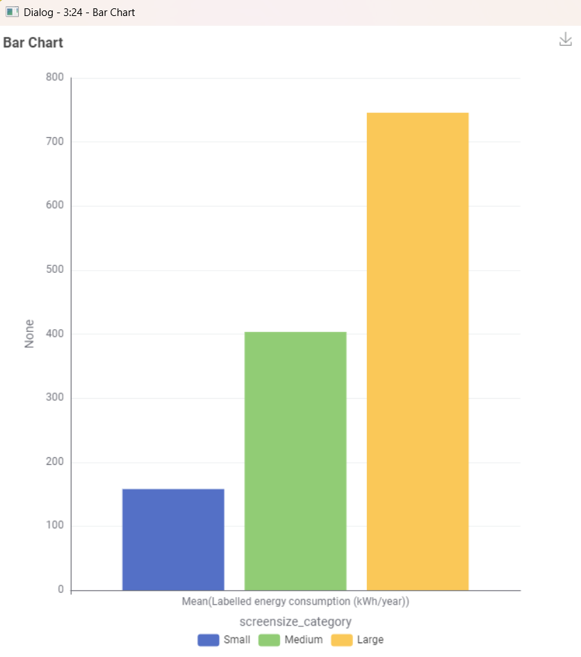
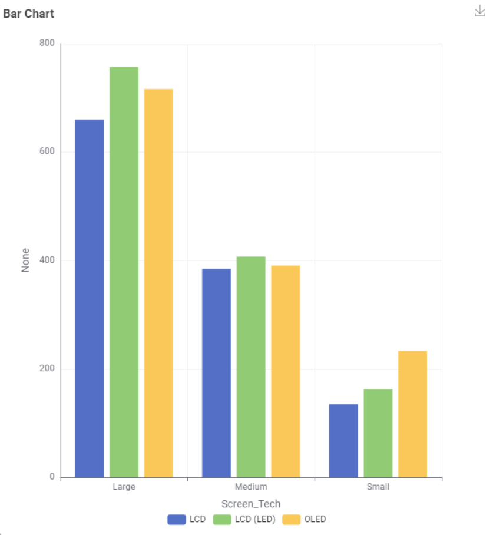

Two Stories About Your
TV's Energy Footprint
For buyers who care about sustainability — how much does screen size and screen technology really affect the energy your TV uses?
Story One — Screen Size
Bigger screens are tempting — but at what cost?
Many buyers focus on picture quality and screen size when choosing a TV, without realising how much size alone can drive up yearly electricity use.
Estimate energy use by screen size
Drag the slider to see roughly how much energy a TV of that size uses per year.

The data shows a clear jump
Average labelled energy consumption rises sharply as screen size increases, across small, medium, and large categories.
Size is the single biggest lever
Moving from a small to a large TV nearly quadruples energy use — far more than any other factor examined in this data set. For environmentally-conscious buyers, this is the first thing worth weighing before purchase.
Choose the smallest screen size that meets your needs
If lowering your energy footprint matters to you, prioritise screen size over other features — a medium TV can cut yearly energy use nearly in half compared to a large one.
Story Two — Screen Technology
Not all screens are built the same
Even TVs of the same size can use different amounts of energy depending on the display technology — LCD, LCD (LED), or OLED.

OLED trends higher at larger sizes
Across medium and large TVs, OLED screens consistently use slightly more energy than LCD and LCD (LED) alternatives. Interestingly, this pattern reverses at small sizes, where OLED uses less.
Technology is a secondary — but real — factor
While size dominates overall energy use, screen technology adds a smaller but noticeable difference within each size category, worth considering once size has already been decided.
At larger sizes, LCD (LED) is the more efficient choice
If you're set on a medium or large TV, choosing LCD (LED) over OLED offers a small additional energy saving — without sacrificing screen size.